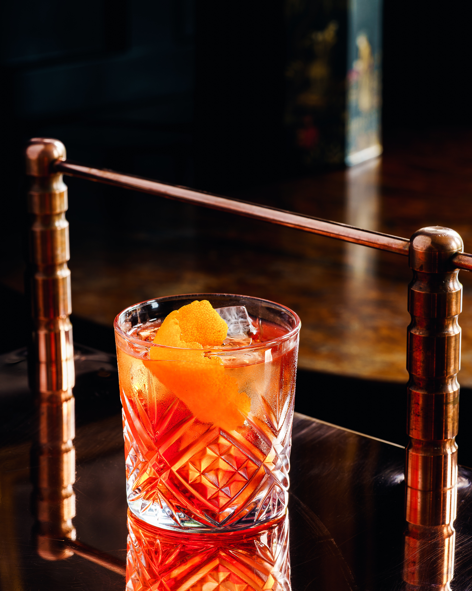
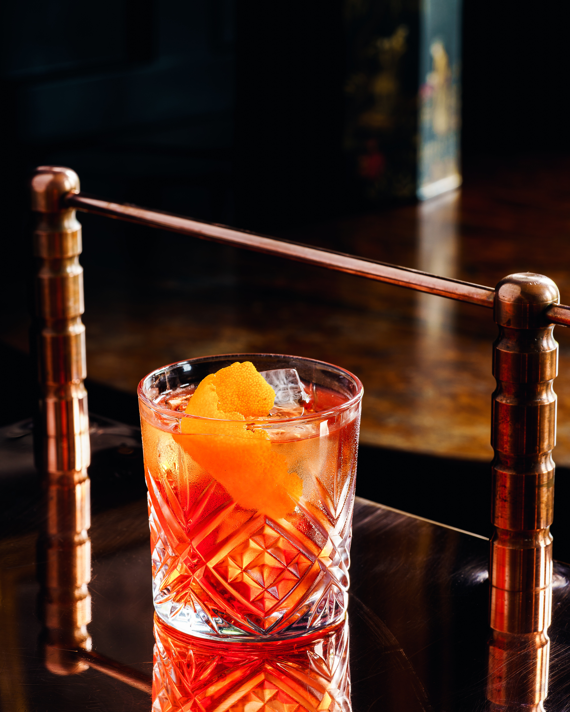
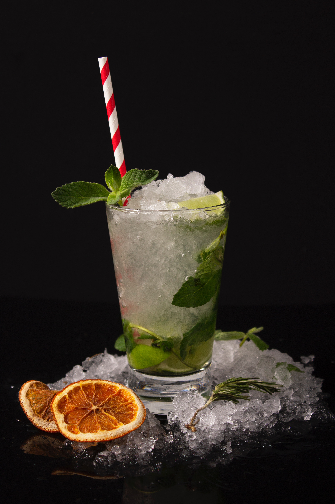
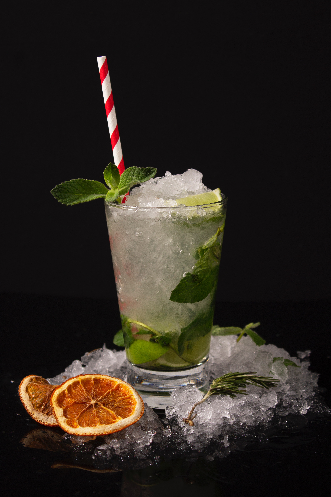
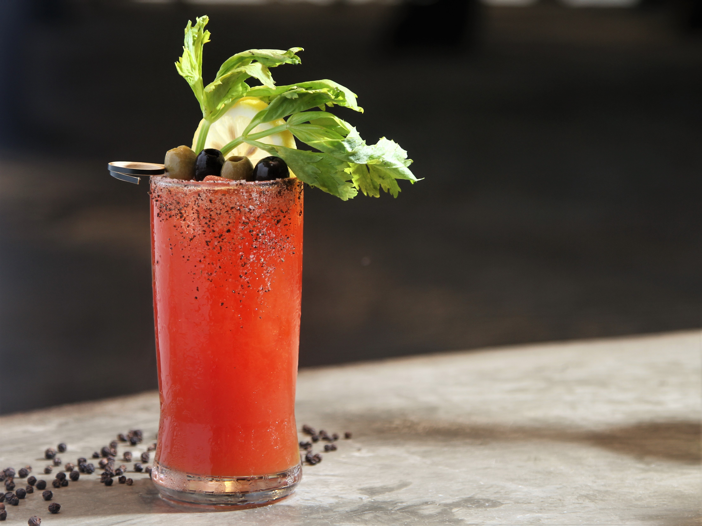
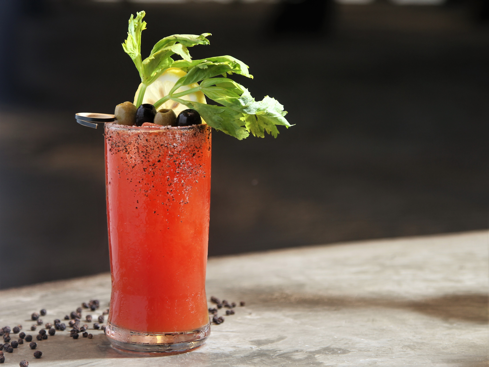

הסיפורים מאחורי השמות
כשתארגנו ערב קוקטיילים לכל החברים תוכלו לצבור עוד כמה נקודות ולספר להם את הסיפורים שעומדים מאחורי הקוקטיילים.
ג'ין טוניק
לפי הסיפורים, חיילים בריטים שנלחמו באיי הודו ניסו להתמודד עם בעיה די גדולה- המלריה.
לאחד החיילים הבריטים היו מי טוניק שמכילים תרכובת כינין, תרכובת שהתבררה כיעילה מאוד במלחמה נגד מלריה.
החיסרון היחיד הוא שלמי הטוניק היה טעם נוראי. הם עירבבו את מי הטוניק עם ג'ין על מנת למתן את הטעם הנורא.
לאחר המלחמה הרבה חיילים בריטיים המשיכו לשתות את השניים ביחד כשחזרו לבריטניה וכך נולד הקוקטייל המפורסם.
לאחד החיילים הבריטים היו מי טוניק שמכילים תרכובת כינין, תרכובת שהתבררה כיעילה מאוד במלחמה נגד מלריה.
החיסרון היחיד הוא שלמי הטוניק היה טעם נוראי. הם עירבבו את מי הטוניק עם ג'ין על מנת למתן את הטעם הנורא.
לאחר המלחמה הרבה חיילים בריטיים המשיכו לשתות את השניים ביחד כשחזרו לבריטניה וכך נולד הקוקטייל המפורסם.
נגרוני
הרוזן קמילו נגרוני שחי בפירנצה שבאיטליה אהב לשתות אמריקנו (קמפרי, ורמוט מתוק וסודה).
הוא ביקש בשנת 1919 מפוסקו סקארסלי - הברמן של קפה ג'יאקוסה לחזק את המשקה שלו ולהחליף את הסודה שמופיעה במתכון המקורי, בג'ין וכך נולד הנגרוני. 
הוא ביקש בשנת 1919 מפוסקו סקארסלי - הברמן של קפה ג'יאקוסה לחזק את המשקה שלו ולהחליף את הסודה שמופיעה במתכון המקורי, בג'ין וכך נולד הנגרוני. 
מוחיטו
מוחיטו הוא קוקטייל המבוסס על רום שהיה פופולרי במשך שנים בקרב המלחים.
המשקה בין היתר בנוי מנענע מרוסקת, לאחר הריסוק עלי נענע אלה מעורבבים עם מיץ לימון, סוכר, מים וסודה.
תכונה אחת שיש למוחיטו היא הטיפול במחלות חניכיים, מה שמסביר את הפופולריות שלו בקרב מלחים.
מלחים ששהו בים לעתים חודשים שלמים מבלי לאכול ירקות ופירות טריים נאלצו להתמודד עם בעיות חניכיים, הנענע היה אחד מאמצעי המניעה הטובים ביותר. 
המשקה בין היתר בנוי מנענע מרוסקת, לאחר הריסוק עלי נענע אלה מעורבבים עם מיץ לימון, סוכר, מים וסודה.
תכונה אחת שיש למוחיטו היא הטיפול במחלות חניכיים, מה שמסביר את הפופולריות שלו בקרב מלחים.
מלחים ששהו בים לעתים חודשים שלמים מבלי לאכול ירקות ופירות טריים נאלצו להתמודד עם בעיות חניכיים, הנענע היה אחד מאמצעי המניעה הטובים ביותר. 
בלאדי מרי
בלאדי מרי הוא קוקטייל מפורסם שידוע בתור תרופה ל "האנגאובר", והוא בדרך כלל נצרך בשעות הבוקר לאחר בילוי ארוך.
יש לקוקטייל וריאציות רבות, כולם כוללים וודקה, מיץ עגבניות, ומבחר של תבלינים לטעם.
לאורך שנים אנשים מייחסים את שמו של המשקה למלכה מרי, שהיתה ידועה באכזריות שלה כשניסתה לכפות את הקתוליות באנגליה. אנשים אומרים כי מיץ העגבניות אמור לייצג דם. עם זאת, אין כל ראיות של ממש שתתמוך בתאוריה זו. 
לאורך שנים אנשים מייחסים את שמו של המשקה למלכה מרי, שהיתה ידועה באכזריות שלה כשניסתה לכפות את הקתוליות באנגליה. אנשים אומרים כי מיץ העגבניות אמור לייצג דם. עם זאת, אין כל ראיות של ממש שתתמוך בתאוריה זו. 